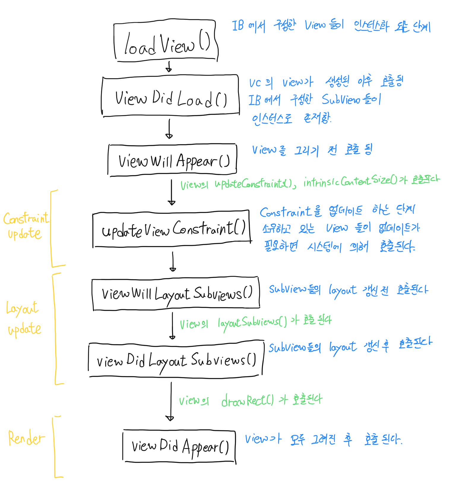

View(ViewController) Layout Cycle
서론
앱개발의 40% 정도는 View를 그리고 Layout을 구성하는데 있다고 생각합니다. 어떤 앱은 Frame기반 Layout을 사용하며 또 어떤 앱은 AutoLayout기반의 Layout을 이용합니다.
iOS11과 iPhoneX의 등장으로 사실상 AutoLayout은 선택이 아닌 필수가 되었습니다.
iPhoneX시리즈의 노치디자인에 대응하기 위해서는 Frame기반보다 AutoLayout기반이 더 효율적이기 때문입니다.
하지만 현실적으로 기존 Frame기반의 레이아웃을 한번에 AutoLayout으로 변경하기 어렵기 때문에 두 가지 방식을 섞어 사용하게 되는데, 여기에서 View(ViewController)의 Layout Cycle을 이해할 필요가 있습니다.
이번 포스팅에서는 Layout Cycle의 이해를 통해 좀 더 나은 앱을 만들수 있는 공부를 목적으로 합니다.
View를 그리는 3단계 프로세스
- Constraint Update
- 제약조건(Constraint)를 업데이트 합니다. Constraint는 Code로도 구성 가능하며 대부분 Interface Builder를 이용해 Constraint를 만듭니다. Constraint는 말 그대로 제약조건이며 View를 실제로 배치하는데에는 영향을 주지 않습니다. 특정 조건에 따라 Constraint를 갱신하여 Dynamic View를 구성할 수 있습니다.
- Constraint의 업데이트 순서는 View 계층구조에서 가장 하위뷰부터 상위뷰로 올라갑니다.
- Layout Update
- Layout을 업데이트 합니다. 여기에서 Layout이란 구체적인 뷰의 Frame 수치 값입니다. Constraint 값을 이용해 View가 위치해야 할 수치값을 갱신합니다.
- layout의 업데이트 순서는 View의 계층구조에서 가장 상위뷰부터 하위뷰로 내려갑니다.
- Render
- View를 2단계에서 구한 수치값을 이용해 화면에 직접 그립니다. UIView의 DrawRect: 메소드가 이에 해당합니다.
ViewController의 Layout Cycle
전 단계에서 이해한 3단계 프로세스를 기반으로 ViewController의 Layout Cycle을 보면 다음과 같습니다.

ViewController는 소유하고 있는 View들의 Constraint, Layout, Render 순서에 따라 Override 메소드들을 시스템의 호출에 의해 실행합니다.
위치 변경 등으로 View를 다시 그려야 할 때 개발자가 해야 하는 것
- Layout을 갱신할 때 : setNeedsLayout() 함수 호출로 View에 layout을 갱신해야 한다는 플래그를 표시한다. 시스템이 플래그를 보고 ViewController의 Layout Update 프로세스를 실행시킨다.
- Constraint를 갱신할 때 : setNeedsUpdateConstraints() 함수 호출로 View에 constraint를 갱신해야 한다는 플래그를 표시한다. 시스템이 플래그를 보고 ViewController의 Constraint Update 프로세스를 실행시킨다.
플래그를 표시한다는 의미
- 시스템은 개발자가 setNeedsLayout() 또는 setNeedsUpdateConstraints()를 호출하면 바로 View를 다시 그리지 않는다. 한번의 RunLoop 안에서 View의 갱신이 여러번 일어나면 비효율 적이기 때문에, 가장 효율적인 방법을 고려했다.
- iOS는 RunLoop가 끝나고 다음 RunLoop를 실행할 때 view의 플래그를 보고 한번에 모든 View를 갱신하는 방법을 선택했다.
개발자가 플래그를 표시하지 않으면 View는 갱신되지 않을까?
개발자가 View에 갱신 플래그를 심는것은 옵션, 시스템적으로 플래그를 표시하는 케이스가 있다.
- View의 Frame 변경.
- View에 subView가 추가되는 경우.
- 디바이스의 orientation이 변경되는 경우.(디바이스 회전)
- Constraint Constant의 변경.
등이 있으며. 이 경우에도 View는 다음 RunLoop에서 갱신된다.
LayoutlayoutIfNeeded(), updateConstraintsIfNeeded()의 용도
위 단계에서 플래그를 통해 다음 RunLoop에서 View를 갱신될 수 있도록 하는 방법을 알았습니다.
UIView의 메소드를 더 살펴보면 LayoutlayoutIfNeeded(), updateConstraintsIfNeeded()가 있습니다.
이 메소드는 다음 RunLoop가 아닌, 호출 그 즉시 View를 갱신합니다. 시스템이 호출을 기다리지 않고 바로 호출하는 경우는 Animation입니다.
UIView의 애니메이션은 View의 시작시점, View의 갱신 종료 시점 두가지 End point를 자연스럽게 연결시켜주는 동작이기 때문에 View를 바로 갱신시켜줘야 하며 그 이유로 위 메소드를 사용합니다.
결론
앱을 구현하면서 Server API의 플래그 등 다양한 경우에 Dynamic View를 구현해야 합니다. Layout Cycle을 정확하게 이해하고 적절한 메소드에 로직을 구현함으로써 사이드 이펙트 없는 View를 그릴 수 있도록 계에에속 연습해야겠습니다.그럼에도 불구하고 왜 iOS10 에서는 AutoLayout이 비정상적으로 동작하는 경우가 많을까요 ㅠㅜ